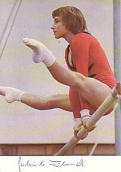

Gabriele Fähnrich (GDR)
1985 World UB Champion
|

Medal Total
- Olympic Games: 1 Bronze
- World Championships: 1
Gold, 3 Bronze
|
Gabriele was born on April 8,
1968 in Hoyerswerda, into a gymnastics family: Gabriele's father, mother, and sister Carola were all active
gymnasts. She was coached by Wolfgang Riedel at SC Dynamo
Berlin. Gabriela won the 1985 world uneven bars title, but a knee injury
kept her from performing at her best. She was a member of the 1988 Olympic team
even though her knee had not healed fully; that competition was her last.
Gabriele got married and had a daughter in 1994 (who's a handball player).
Now divorced, she owns her own hairdressing and cosmetology salon in Cuxhaven.
Competition Results
- 1982
Jr. GDR-USSR Dual Meet: 2nd Team, 5th AA
1982
- GDR Championships: 5th AA, 3rd UB
GDR Cup: 5th AA
-
- 1983
- Chunichi Cup: 7th AA
Cottbus International: 7th AA, 2nd UB
Dynamo Spartakiade: 3rd Team, 6th AA
- World Championships: 3rd Team,
15th AA, 5th UB
-
- 1984
- Cottbus International: 7th AA, 2nd UB
DTB Cup: 3rd AA, 2nd UB, 4th B, 5th V, 6th FX
- CSSR Spartakiade (Olomouc): 3rd Team, 3rd UB
- DTV Cup: 2nd AA
- GDR-NOR-SWE Tri-Meet: 1st Team, 1st AA
- Ontario Cup: 7th AA
-
- 1985
- Cottbus International: 1st AA, 2nd UB, 3rd B
- European Championships: 12th AA, 5th UB
- GDR Championships: 2nd AA, 1st B, 2nd UB
- Moncada Cup: 1st AA, 1st UB, 1st B, 1st
FX
- World Championships: 3rd
Team, 4th AA, 1st UB
-
- 1986
- DTV Cup: 1st AA
-
- 1987
- World Championships: 3rd Team
-
- 1988
- GDR Championships: 3rd UB
GDR-CSSR Dual Meet: 1st Team, 3rd AA
GDR Olympic Trials: 4th AA
Golden Sands International: 5th AA, 1st UB
- Olympic Games: 3rd Team, 25th AA
(prelims)
-
This page was created on January 21, 1999 and was last
updated on June 22, 2021.
© Gymn Forum
-